TT Stop is an order that is triggered when the market has reached or penetrated a specified price in the market. Stop triggers are typically set worse than current market prices, which means that Buy Stops are placed above the current last traded price, while Sell Stops are placed below the last traded price.
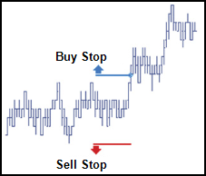
Stop orders in place for the same product at the same trigger price (for the same trader or multiple traders), process in a FIFO (first in, first out) order.
Behaviors
The following examples illustrate how you can configure a TT Stop order with different behaviors for the child and parent orders. Also, each example shows how the order will appear in MD Trader.
-
Setting different types of Stop tiggers
-
Specifying the price at which child orders are entered
-
Setting preconditions for the parent order
Triggering a TT Stop order at a specific price level
Using a basic TT Stop lets you set the worst price at which you will execute a trade. A TT Stop order is always placed on the opposite side of the market.
The following example shows how you can flatten a 20-contract short position in the CME 6E Sep19 contract with a Limit order only if the market moves away and a trade occurs four ticks away from the inside market when you place the order. In this case, you would enter a TT Stop order as follows:
-
From MD Trader or an Order Ticket, set the order quantity to 20.
-
Select TT Stop from the order type dropdown to display the flyout.
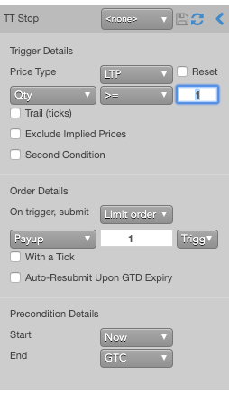
-
Because you want to trigger the TT Stop order if any trade occurs at a specified price level, select LTP from the Price Type dropdown.
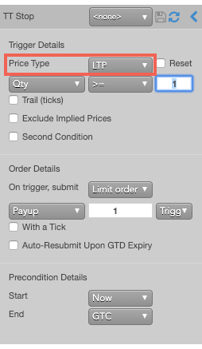
-
By default, a TT Stop order submits a Limit order with a one-tick payup from the trigger price. This behavior is acceptable in this case, so verify the settings.
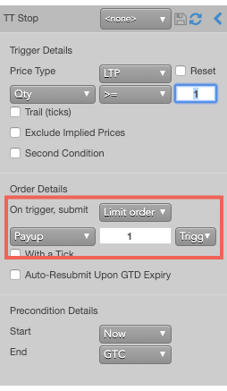
-
Hover the mouse over a price. Notice that the cursor changes to
 for an invalid price on the same side and to 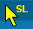 for a valid price on the opposite side.
If you placed a Buy order at 1.14040 in MD Trader, the TT Stop parent order would resemble the following.
for an invalid price on the same side and to 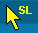 for a valid price on the opposite side.
If you placed a Buy order at 1.14040 in MD Trader, the TT Stop parent order would resemble the following.
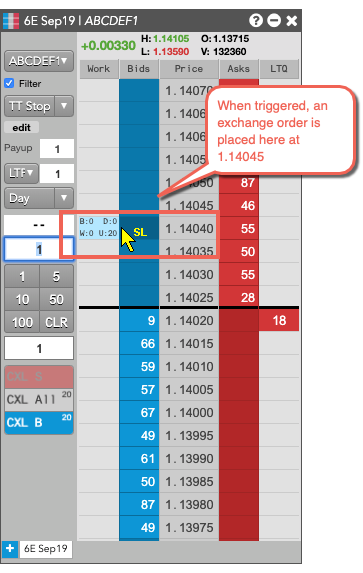
In this scenario, when a trade occurs at 1.14040, the TT Stop parent order will submit a 20-lot Buy child exchange order at 1.14045.
Setting a liquidity-based trigger at a specific price level
In addition to setting TT Stop orders that trigger at a specificy price level, you can also include a check for the available quantity. When the desired price level is reached, the TT Stop parent order will enter its child order only if the desired quantity is also available at that price. Specifying an available quantity can increase the chances that the child order will be filled quickly.
The following example creates a TT Stop order that only triggers if the available quantity on the same side of the market as your selected price is less than or equal to 20. In this example, you would configure the order as follows.
-
From the Price Type dropdown, select Same Side. Then, select Qty and <= from the dropdown and enter 20 as the quantity.
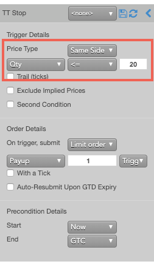
-
Specify other information for the order, as desired.
-
Enter the order at the desired price and quantity above the market.
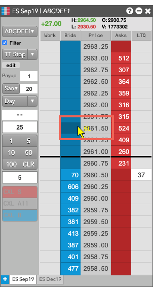
If you submitted a Buy stop at 2961.50, the TT Stop parent order would resemble the following.
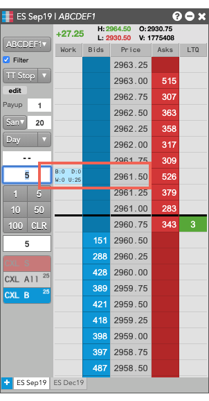
Setting a trigger that trails the market
Instead of setting a trigger at a specific price, you can create a trigger that follows the market by a number of ticks. If the market moves away after you enter the order, the TT Stop trigger will also move away to trail the price by a number of ticks. If the market then reverses, the TT Stop order will maintain its current price.
The following example enters a Sell-side TT Stop order that trails the last-traded price by two ticks:
-
{% include Parameters/TriggerPrice_Details.html%}
Tip: A dropdown for this value is added to the MD Trader Order Entry Panel to let you set the value without needing to reopen the flyout panel.
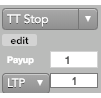
Note: If you click a custom action button (or use a hotkey) for this TT Order Type that also specifies an order template, these two fields will not be displayed, as the template already defines their desired values.Right-clicking on the button displays these parameters. You can also click the edit button to make changes, if desired.
-
{% include Parameters/TriggerQuantity-Details.html%}
- {% include Parameters/ResetOnRevert.html %}
- {% include Parameters/TrailOffset.html%}
Adding a secondary liquidity condition for the trigger
To provide even greater control of when a TT Stop order submits its child order into the market, you can set a secondary, liquidity-based condition. When the price reaches the TT Stop trigger price, you can check the available quantity of a different price level. Only when both conditions are true, does the TT Stop parent order submit its child order to ther market.
Note: When using a second condition, precisely one of the conditions must use an LTP trigger.
The following example configures a TT Stop order to trigger a Stop order only when a trade occurs at a price level with less than half of the order quantity available at the price level on the opposite side of the market:
-
From the Price Type dropdown, select LTP and set the the desired order quantity.
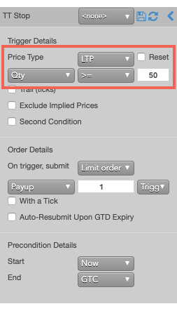
-
Enable Second Condtion.
Addtional settings are revealed.
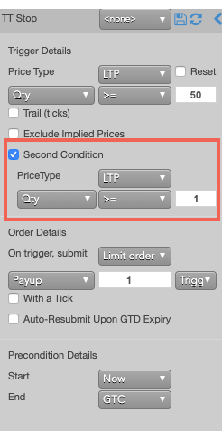
-
From the Price Type dropdown, select Opposite Side; then set the trigger to % <= 50.
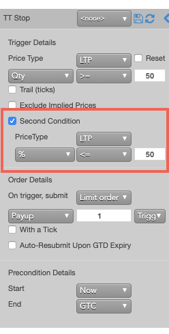
-
Enter the order on the desired side of the market.
If you entered a Sell-side TT Stop order, the parent would would be similar to the following.
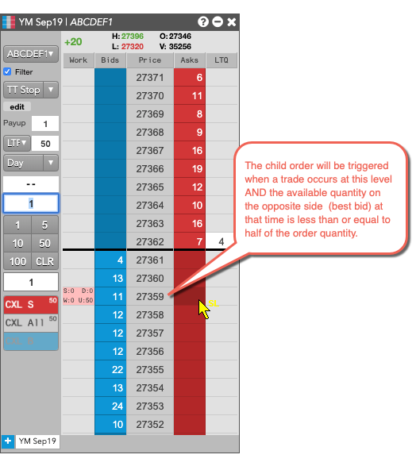
Setting the type and price of the child order
When the TT Stop parent order is triggered, it will enter a child order into the market. The TT Stop order lets you enter the following types of child orders:
-
Market order
-
Limit order
-
Market Limit Market (MLM) order
To configure the child order details:
-
In the Trigger Details section of the flyout, configure the trigger condition as desired.
-
In the Order Details section, select the order type. In this example, we will submit a Limit order, so select Limit order from the On trigger submit dropdown.
-
For a Limit order, you can use payup ticks to enter the child order using a relative price. In this example, we set the payup ticks to 0 ticks away from the trigger price to enter the order at the trigger price.
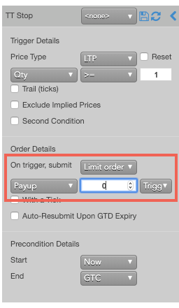
You can also use positive numbers to price the order further away from the market or negative numbers to price the order closer to the market from the selected price type.
-
Enter the order at the desired side and trigger price.
If you entered a Buy stop at 2954.50, the parent order would resemble the following.
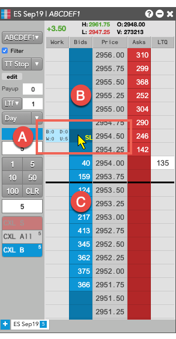
-
With 0 payup ticks, the child order will be entered at the trigger price.
-
With postive payup ticks, the child order will be entered above the trigger.
-
With negative payiup tics, the child order will be entered below the trigger.
When the order is triggered, the TT Stop parent will enter its child order at 2954.50.
Aggressing the price of a working child order based on market conditions
You can also apply With-A-Tick functionality to the child orders. This feature automatically gives traders the ability to work an order at one price and automatically pay up one tick based on changes in market liquidity. It re-prices the child order one tick toward the market when the quantity available at the opposite drops below a user-defined threshold.
To configure each child order to pay-up one tick if the available quantity on the opposite side of the market drops below 10, you would use the With a Tick feature as follows.
-
Specify the desired quantity and price settings.
-
Enable With a Tick, set the value to 20 and select Qty from the dropdown.
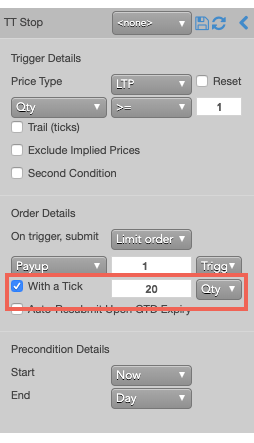
-
Enter an order at the desired price.
If you entered a Buy order at 1.11355, the TT Stop parent order would resemble the following.
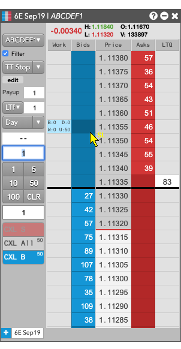
When the TT Stop order is triggered, it looks at the available quantity at 11360. If the available quantity is less than 20, the TT Stop parent order will submit its child order at 11360.
{% include tto-time-params.html %}
Setting start and end times for a parent order
By default, a parent orders begin working immediately after submitting it and continues to work until canceled. You can, however, customize when a parent order begins working and when it stops. If you specify a future start time, the Order Book will show the parent order Status as Working and its SynthStatus as Waiting.
Note: If you specify both a trigger and a future start time, the start time takes precedence. When the specified start time is reached, the parent order will begin working and evaluate the trigger condition at that time.
To set custom start and stop times for a parent order:
-
Configure the Iceberg details for the child orders as desired.
-
To set a future start time:
-
Select Time from the Start dropdown.
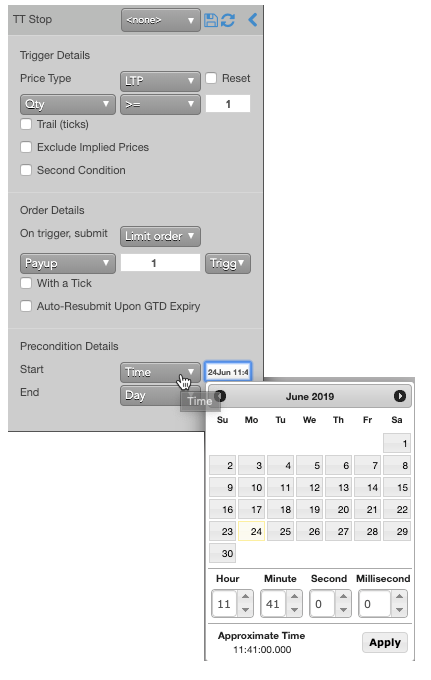
-
Specify the desired date and time; then click Apply.
- For the End setting, click the drop down arrow and select one of the following:
- GTC: Keeps the parent order working until it is canceled.
- Time: Sets a time and date for when the parent order ends.
- Day: Cancels the parent order at the end of the trading session.
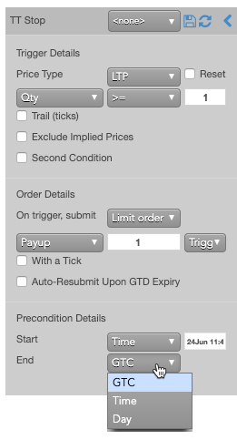
TT Stop order Audit Trail messages
The Audit Trail displays information about what causes TT Stop orders to be triggered. When a TT Stop order is triggered, the Message column is populated with information similar to the following:
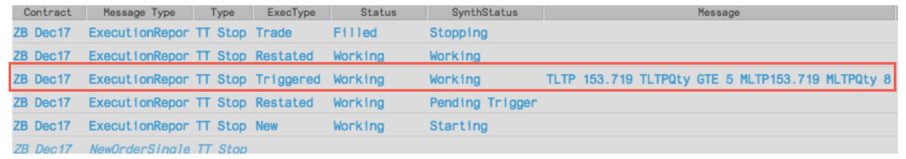
The message uses the following format:
T[Trigger Type] [TriggerPrice] T[TriggerType][TriggerQtyType] [TriggerCompare] [TriggerQtyValue] M[TriggerType] [Trigger Type Price] M[TriggerType] [Qty At Trigger Type]
where the "T" values indicate the values the user provided for the TT Stop order and the "M" values represent the market values that triggered the TT Stop order.
In this example, the following message was recorded when the TT Stop order was triggered:
TLTP 153.719 TLTPQty GTE 5 MLTP 153.719 MLTPQty 8
The message indicates the user entered a TT Stop order with a trigger condition of LTP = 153.719 and LTP Qty (LTQ) >= 5. The market value that triggered the TT Stop order was an LTP = 153.719 and LTP Qty (LTQ) = 8.
TT Stop order parameters
Trigger Details parameters
-
{% include Parameters/TriggerPrice_Details.html%}
Tip: A dropdown for this value is added to the MD Trader Order Entry Panel to let you set the value without needing to reopen the flyout panel.
-
{% include Parameters/TriggerQuantity-Details.html%}
- {% include Parameters/ResetOnRevert.html %}
- {% include Parameters/TrailOffset.html%}
- {% include Parameters/SecondCondition.html %}
- {% include Parameters/ExcludeImpliedPrices.html %}
Order Details parameters
- {% include Parameters/OnTriggerSubmit_Details.html %}
- {% include Parameters/LimitPriceType_Stop_IfTouched.html%}
- {% include Parameters/LimitPrice.html%}
- {% include Parameters/WithATick.html %}
- {% include Parameters/AutoResubmit_Details.html %}
Precondition Details parameters
- {% include Parameters/StartTime_Details.html %}
- {% include Parameters/EndTime_Details.html %}
- {% include Parameters/EndTimeAction_Details.html %}